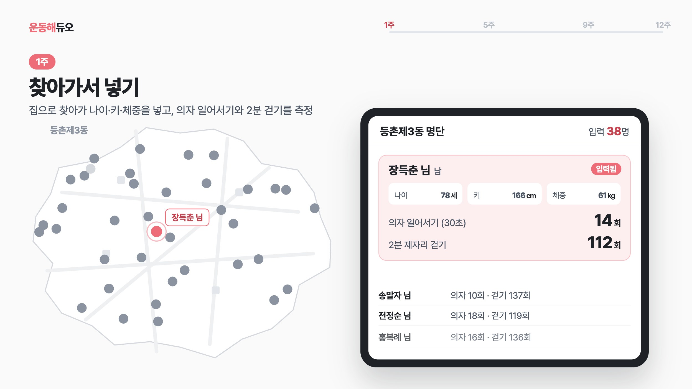

건강증진 아이디어 경진대회
건강과학 빅데이터로 여는 건강한 서울
운동정보회사 신입사원이 소개하는
운동해듀오
운동 짝을 맺어 주고,
끊기면 다시 맺어 주는 도구
소개한 줄 소개
한 줄 소개
도와줄 사람이 없고 운동하지 않는 서울 노인 약 16만 명에게 체력이 비슷한 운동 짝 맺기
누구에게
추정약 16만 명
아플 때 도와줄 사람이 없고
운동하지 않는 서울 노인
무엇을
또래 운동 짝과 12주
체력이 비슷한 짝을 맺어
12주 동안 같이 운동
누가
경로당 운동 지도자
운동해듀오로 짝을 맺고 챙김
노인은 스마트폰을 조작하지 않음
서울시 노인실태조사 2024(서울시복지재단, 한국사회과학자료원 제공), 행정안전부 주민등록 인구(2026년 9월)
왜 이 대상인지, 왜 짝인지, 어디서 먼저 할지를 자료로 차례로 보임
문제노인과 서울
노인과 서울을 보는 이유
일주일에 운동하지 않는 서울 노인 22.6%, 추정 약 44만 명
65세 기대여명 21.7년 가운데 유병기간 12.6년
유병기간: 질병이나 사고로 아픈 상태로 보내는 기간 · 국가데이터처 2024년 생명표(전국)
서울 65세 이상 약 197만 명(서울 인구의 21.2%) 가운데
추정약 44만 명일주일에 운동하지 않음
2024년 서울시 노인실태조사의 운동하지 않는 비율 22.6% × 2026년 9월 서울 65세 이상 주민등록 인구 1,965,896명 · 단순 환산한 값
세계보건기구 신체활동 지침(2020): 65세 이상의 신체활동은 사망 위험을 낮추고 낙상과 기능 저하를 막음
국가데이터처 2024년 생명표(전국), 서울시 노인실태조사 2024 원자료, 행정안전부 주민등록 인구(2026년 9월), 세계보건기구 신체활동·좌식행동 지침(2020)
건강하게 오래 사는 것을 목표로, 운동하지 않는 추정 약 44만 명부터 분석
문제다섯 조건의 격차
누가 운동하지 않는지: 서울 노인 3,039명을 다섯 조건으로 나눠 격차 비교
운동하지 않는 비율의 격차, 몸(7.4%p)보다 관계(17.8%p)에서 더 큼
조건별 운동하지 않는 비율각 집단 안에서 운동하지 않는 사람의 비율 · 위 막대는 해당하는 쪽, 아래 막대는 아닌 쪽
격차(두 비율의 차이)
관계
몸이 아파 집안일을 부탁해야 할 때 도와줄 사람 없음
없음 36.5%
있음 18.7%
17.8%p
디지털
기기 기능 12개 가운데 3개 이하 사용
해당 32.0%
해당 안 함 18.8%
13.2%p
몸
계단 오르기·400m 걷기·일상생활 가운데 하나라도 어려움
해당 27.3%
해당 안 함 19.9%
7.4%p
돈
기준중위소득 50% 미만이거나 기초생활 수급
해당 26.7%
해당 안 함 20.9%
5.8%p
해당 25.0%
해당 안 함 19.3%
5.7%p
몸이 불편한 노인끼리 비교해도 격차 16.0%p
서울시 노인실태조사 2024, 가중치 적용 · 도와줄 사람 없음 722명, 있음 2,317명, 결측 없음 · 추정 약 16만 명 = 8.0% × 2026년 9월 서울 65세 이상 주민등록 인구(단순 환산)
도와줄 사람이 없고 운동하지 않는 서울 노인, 추정 약 16만 명
문제운동 희망 의향으로 다시 나눔
운동할 마음이 없어서인지 확인: 운동 희망 의향으로 나눠 격차 다시 비교
운동할 마음이 같은 노인끼리도 격차는 절반 넘게 그대로
운동하지 않는 비율위 막대는 도와줄 사람이 없는 쪽, 아래 막대는 있는 쪽 · 각 집단 안에서의 비율
격차(두 비율의 차이)
서울 노인 전체
나누기 전 · 본인 응답 3,039명
없음 36.5%
있음 18.7%
17.8%p
표본을 운동 희망 의향으로 다시 나눔 · 3,039명 → 2,188명 + 851명
운동을 희망하는 노인끼리
의향 많이·다소 2,188명
없음 24.1%
있음 12.6%
11.4%p
희망이 보통 이하인 노인끼리
의향 보통 이하 851명
없음 53.1%
있음 38.9%
14.2%p
서울시 노인실태조사 2024 원자료, 본인 응답 3,039명, 가중치 적용. 격차는 반올림 전 값으로 계산
운동할 마음의 차이만으로는 설명되지 않는 격차
문제글과 면담 연구
숫자 뒤의 사정: 노인 본인, 가족, 돌봄 인력의 글 692건과 면담 연구 26편
혼자서는 못 나가고, 같이 가 준 사람이 있을 때 움직임
“
혼자 사는 사람은 누가 데리고 나와야 하는데 그런 사람이 없다
돌봄 인력 · 기사
“
혼자는 안돼요... 못해...
본인 · 김경오 2019, 면담 연구
“
혼자 새로운 곳에 가는 건 자신 없는데, 여기서 마음 맞는 친구들과 같이하면 훨씬 쉽게 하지.
또래 · 유현미 2020, 면담 연구
면담 연구 7편의 사례 가운데 같이 가 준 사람이 누구인지 나온 16건: 또래 11건, 가족 3건, 생활지원사 1건, 이웃 1건
모은 글 692건(기사, 돌봄 사례집, 가족과 본인의 글), 노인 면담 연구 26편(김경오 2019, 이유미 2018, 유현미 2020, 김희경 2023 등)
혼자서는 못 나갔고, 같이 가 준 사람으로 또래가 자주 나옴
제안측정 뒤 석 달
지금의 측정과 운동처방 뒤에 무엇이 기록되는지: 서울 체력측정 기록에서 셈
측정받은 2만 명 가운데 석 달 뒤 다시 측정한 사람은 710명, 그 사이 석 달은 기록이 없음
측정받은 사람
20,034명
서울 65세 이상 회원, 첫 측정 기준
석 달 뒤 다시 측정한 사람
710명·3.5%
첫 측정 뒤 9~15주 사이에 다시 측정
그 사이 석 달
기록 없음
운동을 했는지, 체력을 관리했는지
확인할 수단이 없음
참고: 다시 측정한 623명의 2분 제자리 걷기 중앙값
107회 → 114회
기록은 늘어 있었지만, 그 사이
무엇을 했는지는 이 자료에 없음
→
→
서울 체력측정 원자료(위치기반 체력측정 및 운동처방 정보, 서울 65세 이상 34,415건)
지금 방식에는 측정 뒤 석 달을 확인할 수단이 없음 · 운동해듀오는 그 석 달을 짝과 출석으로 채움
제안찾은 것 셋을 이은 12주
앞에서 찾은 세 가지를 이음
처음에는 지도자가 데리고 나오고, 12주에 걸쳐 그 일을 짝에게 넘김
찾은 것
하는 일
짝
같이 가 준 사람은 또래
면담에서 또래가 자주 나옴
부산 건강걷기 석 달: 동아리에 든 사람 78일, 안 든 사람 57일
측정 뒤 석 달은 기록이 없음
다시 측정한 사람 3.5%
↓
지도자가 집으로 찾아가
데리고 나옴
1~4주
↓
그 일을 짝에게 넘김
지도자는 한 번씩 쉼
5~8주
↓
짝끼리 12주를 채움
출석 기록, 12주에 다시 측정
9~12주
부산 1530 건강걷기 사례는 부록 3
나오게 하고, 또래에게 넘기고, 석 달을 채우고 기록함
시험체력을 맞춰 맺기
그 짝을 아무나와 맺어도 되는지: 서울 체력측정 기록 17,477명으로 400번 시험
짝끼리 2분 걷기 차이, 아무렇게나 맺으면 20.5회, 체력을 맞춰 맺으면 9.6회
첫 측정자 17,477명
다섯 항목이 모두 있는 서울 65세 이상
같은 성별 20명 뽑기
점 그림은 한 번 뽑은 예
두 방법으로 둘씩 맺기
아무렇게나(난수로 섞음), 다섯 항목을 맞춰서
400번 되풀이한 평균
짝 사이 2분 걷기 차이
아무렇게나
맺으면
400번 평균
시험 한 번의 예
20.5회
첫 측정 중앙값 117회
여섯 걸음에 한 걸음 차이
체력이 비슷한
사람끼리
다섯 항목 차이를 합친
거리가 가장 작게
9.6회
2분 걷기도 맞춘 항목에 포함
2분 제자리 걷기 적음
많음
“
둘이 템포가 안 맞거든요. 하나는 빨리 가고
노인 면담 연구
서울 체력측정 원자료 · 맞춘 항목: 2분 제자리 걷기, 의자 일어서기, 악력, 표적 돌아오기, 8자 보행(눈금을 맞춘 뒤 차이를 합친 거리) · 117회는 첫 측정자 17,477명의 중앙값
시험동 단위로 모으기
누구끼리 맺을지도 같은 기록으로 시험
경로당 안에서만 맺지 않고 동 단위로 모으면 맞는 짝이 두 배 가까이 늘어남
맞는 짝의 비율맞는 짝: 2분 제자리 걷기 차이 10회 안, 의자 일어서기 차이 2회 안
27%
53%
두 경우 모두 같은 성별, 체력을 맞춰 맺기, 400번씩 되풀이한 평균
서울 체력측정 원자료, 다섯 항목이 모두 있는 첫 측정자 17,477명. 같은 성별에서 뽑아 체력을 맞춰 맺기를 400번씩 되풀이
그래서 운동해듀오는 동 단위로 사람을 모아 맺음
시험운동해듀오
동 전체를 한꺼번에 맞추고 챙기는 일은 지도자 혼자 손으로 불가능
운동해듀오: 지도자 한 사람이 동 전체의 짝을 쉽게 맺고 챙기게 해 주는 도구
쓰는 사람은 지도자 · 노인은 스마트폰을 조작하지 않고 알림과 종이로 받음디지털 격차 13.2%p(4장) · 결혼정보회사를 본뜸
정보 받기
지도자는 나이, 성별, 사는 곳만 입력
측정 기록이 있으면 더 입력
없으면 나이와 성별로 먼저 맺음
맞는 사람 찾기
체력이 비슷하고 걸어서 가까운
사람을 동 전체에서 한꺼번에
맞춰 추천
한 사람도 빼지 않고
전체를 한꺼번에 맺음
지도자가 확인하고 고칠 수 있음
맺은 뒤 챙기기
짝마다 카드 한 장:
같이 할 운동처방, 만날 경로당
안 나온 날과 그만둔 사람을
목록으로 알림
그만두면 새 짝 추천
지도자는 넣고 확인 · 맞추는 계산과 챙길 목록은 도구가 만듦
실행먼저 써 볼 동
동 단위 사업이라면 어느 동부터인지: 서울 427개 동을 거름
혼자 사는 수급 노인이 가장 많이 모여 있고 체력인증센터가 먼 동, 등촌제3동
대상이 많은 동 43곳
혼자 사는 수급 노인 수 상위 10%
비율도 높은 동 22곳
65세 이상 가운데 비율도 상위 10%
센터가 먼 동 12곳
가장 가까운 체력인증센터가 2km 밖 · 측정받으러 가기 어려운 곳
혼자 사는 수급 노인
등촌제3동
2,452명
서울 동 중간
302명
체력인증센터까지
등촌제3동
4.6km
서울 동 중간
2.0km
혼자 사는 수급 노인으로 거른 까닭: 도와줄 사람 없음 수급 노인 48.0%, 비수급 노인 20.1%
서울 427개 동 독거노인·수급자·시설 표, 동별 체력인증센터 거리 표, 서울시 노인실태조사 2024. 서울 동 중간은 427개 동의 중앙값
대상이 가장 많고 지금 방식이 닿기 어려운 동에서 먼저 시범
실행시연
등촌제3동을 예로 돌려 봄 · 지도자가 쓰는 화면
정보를 넣으면 짝 추천, 한 사람이 그만두면 다시 추천



가상의 사람으로 돌려 본 시연
1정보 넣기나이, 성별, 사는 곳과 측정 기록 입력
2짝 후보체력이 비슷하고 걸어서 가까운 사람 추천
3맺기담당자가 확인해 맺으면 지도에 선으로 이어짐
4관리한 사람이 그만두면 혼자 된 사람에게 새 짝 추천
실행세는 것과 그다음
시범 12주 동안 세는 것
등촌제3동에서 확인할 것: 짝이 12주까지 이어지는지, 체력이 달라지는지
1주
2주
3주
4주
5주
6주
7주
8주
9주
10주
11주
12주
안 나온 날
짝끼리 챙기는 정도
안 나온 날 짝이 연락한 횟수,
다음에 다시 나온 횟수
12주
짝이 이어지는 정도
처음 맺은 짝 가운데
12주까지 같이 운동한 짝
짝이 끊긴 사람 가운데 다시 맺어 12주까지 나온 사람
12주 다시 측정
체력 변화
다시 측정한 2분 걷기와
의자 일어서기
등촌제3동 다음: 시범은 제한된 인원으로 시작 · 운동 지도자를 양성해 같은 세 기준으로 고른 나머지 11곳으로
쓰는 자원: 서울에 이미 있는 경로당 운동 지도자와 체력인증센터
도와줄 사람이 없는 노인 곁에 맞는 짝을 두어
이 기간 줄이기
65세 기대여명 21.7년
유병기간 제외9.1년
유병기간12.6년
도와줄 사람이 없는 노인 곁에 체력이 맞는 또래 짝 · 등촌제3동 12주 시범에서 숫자로 확인
건강증진 아이디어 경진대회
건강과학 빅데이터로 여는 건강한 서울
부록질문 답부록 1
본 자료와 표본 수
자료별 표본 건수
| 자료 | 표본 | 쓴 장 |
|---|
| 서울시 노인실태조사 2024 원자료(서울시복지재단, 한국사회과학자료원 제공), 가중치 적용 | 본인 응답 3,039명. 수급 응답자 246명 | 2~4, 8, 12장, 부록 2, 7 |
| 같은 조사, 운동 희망 의향별 비교 | 의향 많이·다소와 보통 이하로 나눠 도와줄 사람 유무로 비교 | 5장 |
| 서울 65세 이상 주민등록 인구 | 1,965,896명. 서울 인구의 21.18% | 2~4장, 부록 7 |
| 위치기반 체력측정 및 운동처방 정보, 서울 65세 이상 | 34,415건, 21,026명. 2022년 1월~2026년 8월 | 2, 7~10장 |
| 다시 측정하러 온 사람 | 9~15주 20,034명 가운데 710명. 15주 안 10.1%. 1년 안 16,383명 가운데 4,557명(27.8%) | 7, 8장, 부록 3 |
| 다시 측정한 사람의 변화 | 항목별 623~718명. 2분 걷기 63%, 표적 61%, 8자 보행 63%, 악력 54%가 좋아짐 | 7장, 부록 3 |
| 짝 맺기 시험 | 다섯 항목이 모두 있는 첫 측정자 17,477명. 400번 되풀이. 2분 걷기 중앙값 117회. 가장 안 맞는 짝 4.69→3.03 | 2, 9, 10장, 부록 4 |
| 측정 없이 추정하기 시험 | 회원별 첫 측정 17,521명, 5겹 교차검증. 간이 측정 셋 59.2%, 악력만 50.7% | 부록 5 |
| 동별 독거노인·수급자·시설 표, 체력인증센터 거리 표 | 서울 427개 동. 12곳 가운데 다섯이 강서구 | 2, 12장, 부록 8 |
| 노인 본인·가족·돌봄 인력의 글 | 모은 글 692건, 이유가 나온 글 374건 | 6장 |
| 노인 면담 연구 | 인용을 뽑은 연구 26편, 같이 가 준 사람이 나온 사례 16건 | 6, 8, 9장 |
| 부산 1530 건강걷기, 영국 Walk with Me | 석 달 동안 걸은 날, 여섯 달 뒤 평가 50명 | 부록 3 |
| 생명표 | 국가데이터처 2024년, 국가통계포털 화면에서 읽은 값 | 3, 14장 |
서울 자료는 원자료에서 다시 계산, 생명표와 부산·영국은 발표된 값
부록질문 답부록 2
혼자 사는 노인과 겹치는 정도
도와줄 사람이 없는 노인의 60.4%는 가족과 삶
도와줄 사람이 없는 서울 노인이 사는 방식
일주일에 운동하지 않는 비율, 도와줄 사람 없음과 있음
| 몸 불편 여부별 | 없음 | 있음 | 차이 |
|---|
| 몸이 불편한 노인 | 38.7% | 22.7% | 16.0%p |
| 불편하지 않은 노인 | 34.5% | 16.7% | 17.8%p |
| 도움받을 사람을 물은 문항별 | 없음 | 있음 | 차이 |
|---|
| 몸이 아파 집안일을 부탁할 사람 | 36.5% | 18.7% | 17.8%p |
| 우울할 때 이야기할 사람 | 37.7% | 18.3% | 19.4%p |
| 세 상황 모두 | 41.4% | 19.6% | 21.8%p |
수급 노인이 많은 동을 고른 이유
도와줄 사람이 없는 비율
수급 노인
48.0%
수급하지 않는 노인
20.1%
수급 응답자 246명
측정받은 사람이 원래 운동하던 사람일 때
측정값이 없어도 기초정보로 맺고,
첫 만남에서 측정해 바로잡음
대상의 크기
서울에 약 16만 명 · 운동하지 않는 노인 가운데 35.3%
서울시 노인실태조사 2024 원자료(서울시복지재단, 한국사회과학자료원 제공), 본인 응답 3,039명, 가중치 적용. 측정 관련 답은 서울 체력측정 원자료
도와줄 사람이 없는 노인은 혼자 사는 노인만이 아님
부록질문 답부록 3
다시 측정한 사람과 또래가 함께한 사례
다시 측정한 사람은 9~15주 사이 3.5%, 1년 안으로 넓히면 27.8%
첫 측정 뒤 다시 측정한 사람
| 기간 | 사람 | 비율 |
|---|
| 9~15주 사이 | 20,034명 가운데 710명 | 3.5% |
| 15주 안 | 20,034명 가운데 2,018명 | 10.1% |
| 1년 안 | 16,383명 가운데 4,557명 | 27.8% |
두 번 측정한 사람의 변화(각 측정의 중앙값)
| 항목 | 사람 | 첫 측정 | 다음 측정 | 좋아진 사람 |
|---|
| 2분 제자리 걷기 | 623명 | 107회 | 114회 | 63% |
| 의자 일어서기 | 635명 | 20회 | 22회 | 62% |
| 표적 돌아오기 | 641명 | 5.7초 | 5.4초 | 61% |
| 8자 보행 | 644명 | 23.5초 | 22.5초 | 63% |
| 악력 | 718명 | 23.3kg | 23.7kg | 54% |
또래가 함께한 사례
부산 1530 건강걷기 · 석 달 동안 걸은 날
걷기 동아리에 든 사람78일
들지 않은 사람57일
영국 Walk with Me · 여섯 달 뒤 평가에 참석한 사람
50명 가운데 43명
두 사례 모두 교육받은 봉사자가 함께함
서울 체력측정 원자료(서울 65세 이상), 부산 1530 건강걷기, 영국 Walk with Me
다시 측정한 사람은 다섯 항목 가운데 넷에서 60% 넘게 좋아짐
부록질문 답부록 4
짝 맺기 세 방법
전체를 한꺼번에 맺으면 가장 안 맞는 짝의 거리가 4.69에서 3.03으로 감소
같은 성별 20명을 둘씩 맺기를 400번 되풀이한 평균. 서울 체력측정 첫 측정자 17,477명. 거리는 다섯 항목(2분 제자리 걷기, 의자 일어서기, 악력, 표적 돌아오기, 8자 보행)의 눈금을 맞춘 뒤 차이를 합친 값. 아무렇게나는 난수로 순서를 섞어 둘씩
| 맺는 방법 | 2분 제자리 걷기 차이 | 의자 일어서기 차이 | 악력 차이 | 두 기준 안에 든 짝 | 가장 안 맞는 짝의 거리 |
|---|
| 아무렇게나 | 20.5회 | 6.6회 | 6.0kg | 10% | 5.40 |
| 가까운 사람부터 차례로 | 11.1회 | 3.2회 | 3.9kg | 42% | 4.69 |
| 합이 가장 작게 한꺼번에 | 9.6회 | 2.7회 | 3.7kg | 39% | 3.03 |
| 같은 방법, 2분 걷기를 빼고 네 항목으로 맞춤 | 15.5회 | 2.4회 | | | |
가장 안 맞는 짝의 거리
아무렇게나
5.40
가까운 사람부터 차례로
4.69
합이 가장 작게 한꺼번에
3.03
두 기준 안에 든 짝: 차례로 맺을 때 42%, 한꺼번에 맺을 때 39%로 비슷함
서울 체력측정 원자료, 다섯 항목이 모두 있는 첫 측정자 17,477명
한꺼번에 맺을 때 가장 안 맞는 짝의 거리가 가장 짧음
부록질문 답부록 5
측정 기록이 없는 사람의 추정
의자 일어서기 하나를 더하면 2분 걷기를 맞히는 비율 49.3%에서 57.5%로 상승
첫 측정 17,521명
서울 65세 이상 회원, 회원마다 첫 측정 하나
넣는 정보를 늘려 가며
나이·성별, 의자 일어서기, 간이 측정 셋
2분 걷기를 추정
5겹 교차검증, 실제 기록과 ±10회 안이면 맞힘
2분 제자리 걷기를 실제 기록의 ±10회 안으로 맞힌 비율
49.3%
57.5%
측정값이 있으면
그 값으로 다시 계산
체력인증센터에서 측정한 사람
의자 일어서기를 더하면 57.5%, 간이 측정 셋을 모두 더해도 59.2%
기초정보로 맺은 짝은 첫 만남에서 측정해 다시 계산
서울 체력측정 원자료, 65세 이상 회원별 첫 측정 17,521명
측정 기록이 없는 사람도 처음부터 짝 맺기 가능
부록질문 답부록 6
찾는 사람과 맡는 사람
실무 세부는 시범을 맡을 주민센터·복지관과 결정
시범 기관과 정할 일
찾는 사람대상 노인을 찾아 나서는 사람
명단명단을 갖고 도구에 넣는 사람
부르는 말처음 찾아갈 때 건네는 말
안 나온 날짝이 안 나온 날 연락하는 방법
비 오는 날밖에서 못 하는 날의 운동
제안하는 것
대상도와줄 사람이 없고 운동하지 않는 서울 노인, 약 16만 명
맺는 기준체력이 비슷하고 걸어서 가까운 사람끼리,
동 전체로 모아서
세는 숫자찾아간 사람 가운데 첫날 나온 사람 수, 12주까지 같이 운동한 짝 수, 안 나온 날 짝이 연락한 횟수와 다음에 나온 횟수
쓰는 자원서울에 이미 있는 경로당 운동 지도자와 체력인증센터
제안하는 것: 대상, 맺는 기준, 세는 숫자, 쓰는 자원
부록질문 답부록 7
조사 비율을 계산한 방법
조사 비율은 응답자마다 붙은 가중치를 넣어 계산
가중치: 응답자가 서울 노인 전체를 닮도록 맞추는 값 · 적게 뽑힌 무리의 응답자는 큰 값, 많이 뽑힌 무리의 응답자는 작은 값
조사가 준 가중치
개인 모수추정 가중치
응답자 한 명이 대표하는 서울 노인 수. 응답자 3,100명, 한 명이 평균 약 570명, 합 약 177만 명
개인 표준화 가중치
평균이 1이 되게 맞춘 값(0.17~2.51) · 비율은 이 값으로 계산
가중치를 넣을 때와 뺄 때
본인 응답 3,039명
| 항목 | 넣을 때 | 뺄 때 |
|---|
| 일주일에 운동하지 않음 | 22.6% | 23.3% |
| 도와줄 사람 없음 | 21.8% | 23.8% |
| 도와줄 사람이 없는 쪽의 운동하지 않는 비율 | 36.5% | 35.3% |
| 도와줄 사람이 있는 쪽의 운동하지 않는 비율 | 18.7% | 19.6% |
| 도와줄 사람이 없고 운동하지 않음 | 8.0% | 8.4% |
사람 수로 바꾸기
가중치를 넣은 비율 × 서울 65세 이상 주민등록 인구 1,965,896명(2026년 9월)
22.6%는 약 44만 명
8.0%는 약 16만 명
서울시 노인실태조사 2024 원자료(서울시복지재단, 한국사회과학자료원 제공)
가중치를 넣어도 빼도 방향은 같음 · 장표의 숫자는 넣은 값
부록질문 답부록 8
동 선정 상세
세 기준을 모두 통과한 12곳 가운데 혼자 사는 수급 노인이 가장 많은 곳, 등촌제3동
기둥 하나가 서울의 행정동 하나. 높이는 혼자 사는 수급 노인 수
걸러진 동세 기준을 다 통과한 12곳체력인증센터와 2km 원
| 자치구 | 행정동 | 혼자 사는 수급 노인 | 65세 이상 가운데 비율 | 체력인증센터까지 |
|---|
| 강서구 | 등촌제3동 | 2,452명 | 28.9% | 4.6km |
| 강남구 | 수서동 | 1,786명 | 32.1% | 3.4km |
| 강서구 | 가양제2동 | 1,745명 | 34.4% | 3.9km |
| 중랑구 | 망우본동 | 1,171명 | 13.4% | 2.9km |
| 강서구 | 방화제3동 | 1,110명 | 17.3% | 7.3km |
| 노원구 | 상계3.4동 | 1,093명 | 15.1% | 4.4km |
| 은평구 | 응암제3동 | 1,083명 | 16.4% | 2.1km |
| 강서구 | 가양제3동 | 971명 | 23.0% | 3.3km |
| 양천구 | 신정7동 | 933명 | 14.7% | 2.4km |
| 강서구 | 방화제2동 | 886명 | 14.8% | 8.9km |
| 노원구 | 중계4동 | 798명 | 17.3% | 3.5km |
| 강북구 | 번2동 | 789명 | 16.7% | 2.4km |
등촌제3동은 서울 동 평균의 6.5배 · 수는 서울 1위, 65세 이상 가운데 비율은 4위. 기준을 상위 10%로 잡든 20%로 잡든 세 기준 모두 통과
서울 427개 동 독거노인·수급자·시설 표, 동별 체력인증센터 거리 표. 상위 10%는 혼자 사는 수급 노인 764명 이상, 비율 13.3% 이상
12곳 가운데 혼자 사는 수급 노인이 가장 많은 강서구 등촌제3동에서 먼저 시범